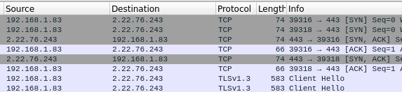

TCP 3 way handshake
= [SYN], [SYN, ACK], [ACK]
1. [SYN]
Source -> Destination
"Hey, I want to connect to you."
= Send a SYN packet out
2. [SYN, ACK]
Destination -> Source
"Hey, I see your request, and I'm also goig to acknowledge it."
= We know the port is open, and we can make that connection
3. [ACK]
Source -> Destination
"Client Hello"
= We send an ACK packet back, and establish connection
Connection to Apple.com, wireshark :
